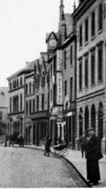
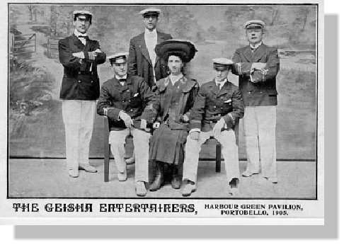
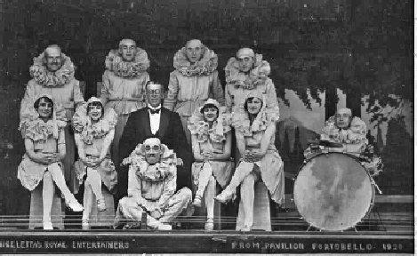
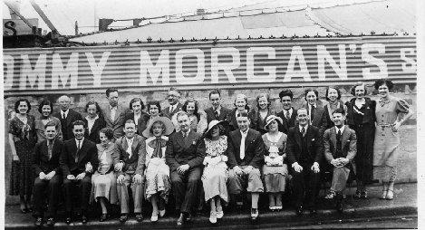
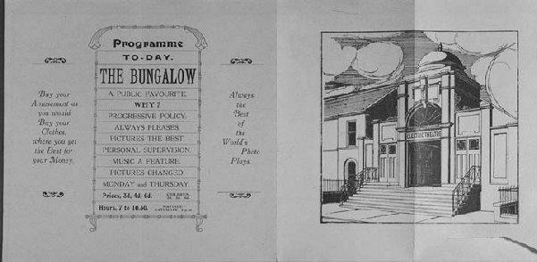
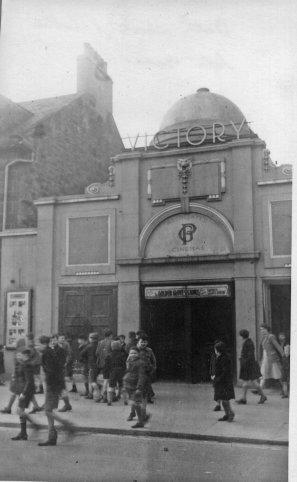
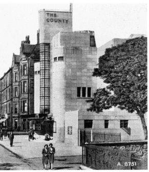
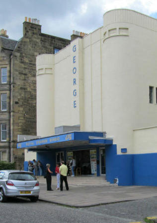

That was Entertainment
The building now housing Portobello Baptist Church was built primarily to be the Burgh Chambers and Town Hall for Portobello Council, but was designed also to fill the need for a suitable hall for public entertainment. The hall opened on 20th July 1863 with speeches and a dinner and staged its first public performance, a concert by the Edina Quartet, on 25th July. The Scotsman newspaper reported that a well selected programme was received with repeated rounds of applause from a crowded audience. On 22nd and 24th October 1864 there were appearances from the celebrated Scottish Vocalist Mr. Kennedy. Performances in the 1870s included concerts put on by the local temperance society. These sometimes had a riveting climax. Occasionally, variety was added to these gatherings by a half-hour's display of magic lantern slides. The tit-bit of each of these displays was a mechanical slide showing a man lying in bed and rats crawling over the bedclothes and disappearing into his open mouth.

There are also reports that the celebrated Tom Thumb drew large crowds for two nights in the 1870s and if this was General Tom Thumb, P. T. Barnum's star attraction, it would certainly have been a coup for the hall's owners. By that time Charles Edward Stratton, to give him his real name, had become the toast of America and Europe, had met Queen Victoria and was extremely wealthy. He had married, and lived in a large house in a fashionable area of New York so a two-night booking in Portobello seems unlikely. Exotic and unusual attractions seemed to have been popular as full houses were reported for appearances by The Aztecs and a troupe of Zulu warriors. By 1901 the Town Hall had added the magic of moving pictures to its programmes of live entertainment. On 7th March 1913 it opened as a fully-fledged picture house named the Cinema Theatre, but it is a bit unclear how long it operated as such until the building was bought by Portobello Baptist Church in 1919.
Blackpool may have enticed thousands of folk to its array of live shows, but for much of the last century Portobello was the summer show-business centre of Scotland. There were live attractions galore, and the town became a by-word for entertainment. It rejoiced in the tag of "Brighton of the North". Back in those halcyon days you could take an evening stroll by the Forth, breathe in the fresh health-giving air, and join the fun at many a breezy entertainment.

There was Harry Marvello's concert party, the Geisha Entertainers, who came to Portobello in 1905. Harry set up a stage and dressing rooms on the Harbour Green at the foot of Pipe Street and brought a company who had worked for him at Ayr the previous summer. It was the first time Portobello had seen such a large open-air show. Success for Marvello was instant, and within a few weeks he had to double his seating. His sister Alice Marvello was at the piano for a company that included Fred Smart, Arthur Roberts and Teddy Denham. The next summer Marvello bought the Tower Hotel on the Promenade, and in the garden in front built the Tower Pavilion, destined to be Portobello's first variety hall and hosting roller-skating and boxing before settling down as the Tower Amusements. Portobello also boasted concert parties and variety companies who took up residence for the summer and performed under cover in large marquees. One of the most popular of these was Andre Letta's Royal Entertainers, first in the Prom Pavilion and from 1921 in a large tented structure in Bath Street. One of his star turns was Dave Willis and among artistes who got an early opportunity with Letta were a young Ella Logan, Jimmy Logan's aunt, who went on to fame on Broadway and "Cavalier of Song" Donald Peers. Letta was a colourful character, always to be seen with a fresh flower in his buttonhole each day. Before turning to production he had been a celebrated conjuror and ventriloquist and was rightly proud of his Command Performances at Balmoral Castle. In his later years he acted as Father Christmas in an Edinburgh department store.

Comedian Dave Willis seated in front of dinner-suited Andre Letta
Along the Promenade in a marquee grandly named the Prom Palace another Scots comic held court in the 1930s. One of Glasgow's favourite sons, Tommy Morgan, regularly brought a top-class variety company for a summer season, which is not so surprising given Portobello's popularity as a holiday destination for the citizens of the west of Scotland. In an enthusiastic review of the opening night of the 1934 show, the local paper reported that expectations raised on account of this company having just completed successive weeks at the Glasgow Alhambra and Theatre Royal, Edinburgh, were more than realised. It is also worth remarking that the show is advertised as twice nightly with a nightly change of programme, not much respite for the cast in those days. Life was slightly less taxing for the cast of David Sharp's Optimists presenting a summer variety show for nine weeks from June to September 1936 in the new Town Hall, with popular comedian Jack Radcliffe topping the bill. There was only one performance each evening, with an entire change of programme on Mondays and Thursdays.

Tommy Morgan seated in the centre of his large cast in 1934.
In 1913 a former roller skating rink in Bath Street was remodelled in Indian style and opened as the Bungalow Electric Theatre. It later was called simply the Bungalow but changed its name to the Victory in 1942, presumably for patriotic reasons, but closed its doors in May 1956. The County Cinema in Bath Street opened in March 1939 with a showing of Disney's Snow White and the Seven Dwarfs and was altogether more opulent and grander than the Bungalow/Victory. It was built in Art Deco style with a central tower outlined with neon tubes that changed colour. In 1954 it became the first cinema in the east of Scotland to have four-track stereophonic sound when it re-opened after reconstruction on 22nd November with a new name, the George. The building now is home to bingo after the last picture show on Saturday 15th June 1974. Portobello's third cinema closed in December 1961. This was the Central, which had opened as the New Picture House in 1914, but went through a number of name changes during its lifetime. Between 1915 and 1942 it was named the Central; from 1942 to 1954 it was the George, before reverting to Central for the rest of its existence. After failed spells as a nightclub and a restaurant, the building was converted into flats although retaining a cinema style frontage.
Portobello Picture Houses

This is an early advertisement for the Bungalow and the drawing clearly shows how its architecture and décor were influenced by the styles of the Indian sub-continent.

This photograph was taken in the early 1950s and the Bungalow had become the Victory. Although a bit faded by time the Eastern influences are still evident.

COUNTY CINEMA, BATH STREET, also known as THE GEORGE
From the Evening News, Saturday, 25 March 1939
"COUNTY CINEMA BATH STREET PORTOBELLO Phone Portobello 82410 FREE CAR PARK
GRAND OPENING CEREMONY THURSDAY, MARCH 30, 1939 at 2.30 p.m. by BAILIE JAMES EDWARD, J.P.,F.R.S.A.
STUPENDOUS OPENING ATTRACTION EXCLUSIVE TO THE DISTRICT SNOW WHITE AND THE SEVEN DWARFS (A) And LARRY BLAKE, DICK PURCELL & BERYL WALLACE in AIR DEVILS Admission: Balcony, 1s. 3d. and 1s.; Children, 9d. and 6d. Stalls: 9d. and 6d. Children, 6d. and 4d Matinee Prices till 4 p.m., Saturdays 3 p.m. Balcony, 9d. and 6d., Children, 4d. Stalls, 6d. and 4d Children 4d. and 2d. Deaf Aids on Request Note: SPECIAL CHILDREN'S MATINEE on SATURDAY APRIL 1 ST AT 11 a.m. to commemorate the Opening, at which each child will receive a Souvenir." 1954 Kinematograph Year Book, pages 415 and 416 "County Cinema, Bath Street, Portobello Proprietor, County Cinema Co. Seats, 1,284. Prices: 1s. to 2s.5d"
From the Scotsman, Saturday, 29 November 1954 Film Notes "The George – Portobello, Cinema Reconstructed - To be opened Monday November 22nd 1954 Festival Use Envisaged The reconstructed George Cinema, Bath Street, Portobello, formerly the County Cinema, will be used for the showing of foreign and classical films during the next Edinburgh Festival. Mr George Palmer, the owner, says that this will be done, "in order to meet the demands of the many patrons for this type of film."
The George will be the first cinema in the East of Scotland to use four-track stereo-phonic sound with the wide screen; this system requires 32 loud-speakers in the cinema, 16 of which are behind the screen.
The official opening will be on Monday night, and members of the public in the queue for the cinema will be filmed and will see themselves on the screen later in the week. The festival film for the opening programme will be: The Robe Starring Richard Burton and Jean Simmons"
(The above notes were taken from the Portobello volume of Places of Entertainment in Edinburgh compiled by George F Baird from the monumental and invaluable work, Edinburgh Theatres, Cinemas, and Circuses, 1820 – 1963 produced by his late father, George Baird , between 1959 and 1964.)

Although the striking illuminated central tower was removed when the building converted to a bingo hall the rest of the art deco style facade remains.
CENTRAL PICTURE HOUSE, 281 HIGH STREET also known as the GEORGE
1914 -15 Portobello Street Directory: There was an entry for New Picture House, 281 High Street. But it soon became known as Central Picture House.
Evening News, Monday, 22 March 1915: This was the only advertisement for this house in the year 1915: "Central Picture House, 281 High Street, Portobello Monday, Tuesday and Wednesday: The Slave of the Poppy. Thursday, Friday Saturday: Lead us not into Temptation No increase in Prices"
1915 Kinematograph Year Book, page 85, New Companies registered during the year. "March 1914: Central Picture House, Portobello, Ltd. Capital £4,000 in £1 shares. Registered Office, 104 West George Street,Glasgow." This extract does not necessarily mean that the Central Picture House was built in 1914. However, between the News advertisement and the Year Book extract, a 'near' date of opening can be guessed at.
Evening News Thursday, 1 October 1942
"Central Picture House 281 High Street, Portobello
CLOSED UNDER NEW MANAGEMENT
OPENING DATE WILL BE DULY ANNOUNCED"
The Central remained closed until an announcement appeared in the News, November 12th 1942, when it re-opened as the George. The following week the first advertisement with the name George appeared in the News, Monday, November 16th 1942.
1954 Kinematograph Year Book, pages 415 and 416 "George Picture House, 281 High Street, Portobello. Proprietor: Ass. GP Cinemas, 149 West George Street, Glasgow. Seats: 847 Prices: 1s. to 1s. 9d."
Between 1954 and 1961 the name reverted to Central. As such, it finally closed its doors as a Picture House on Saturday, December 9th 1961. The last advertisement as a Picture House was on Saturday, December 2nd 1961. There is an entry for The Central Picture House in the 1961-62 Street Directory.
(From Places of Entertainment in Edinburgh - Portobello)